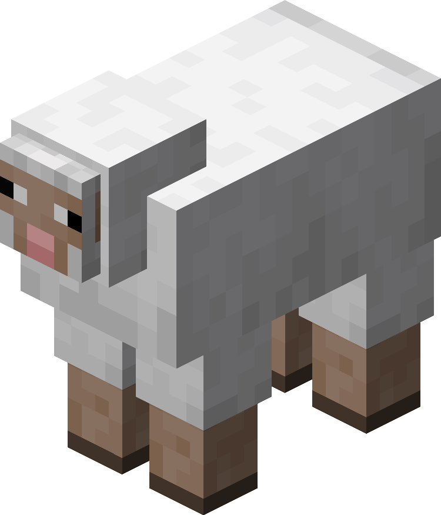
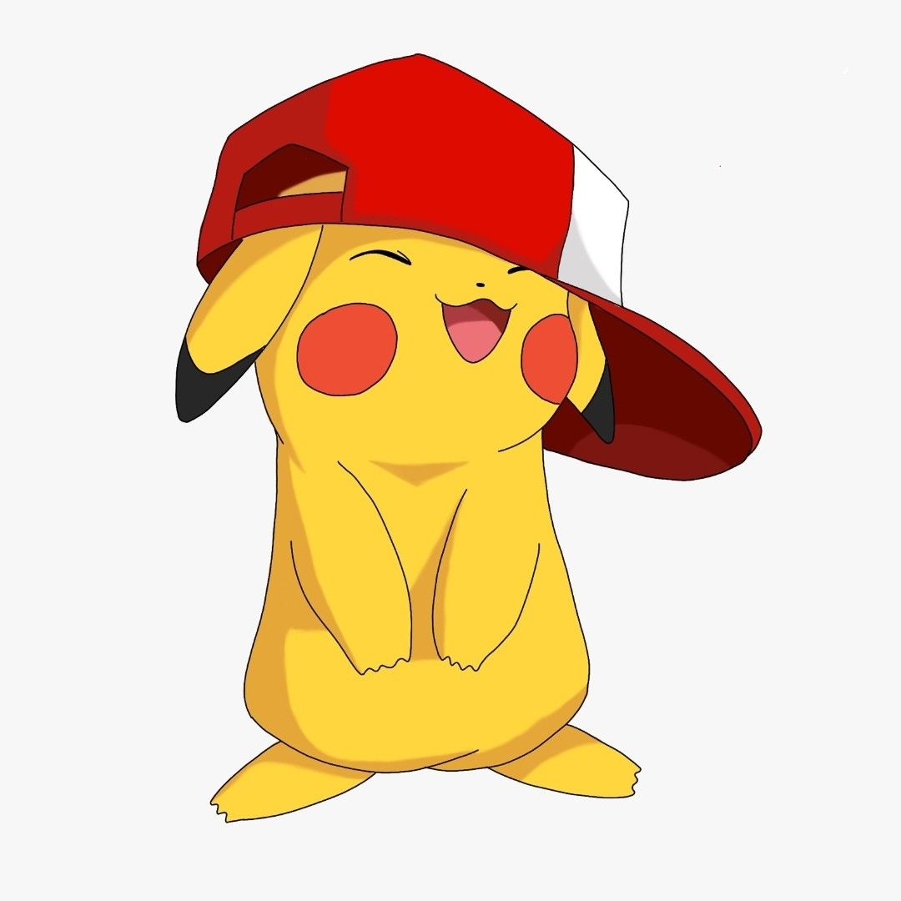

A totally unbiased post of Minecraft
October 2, 2026 by Shaun Webb

Minecraft is arguably the greatest game of all time. it is
the first game of many children who grew up in the 2000s, and
has managed to maintain its popularity for the past decade and a
half. many persons started on the Minecraft PE or the pocket edition.
it gave many children Minecraft on their phones or ipads, This
allowed children who couldnt afford to play on the bigger consoles
still able to not be left out.
Minecraft has had such a big impact that those same children
who are adults now play still play Minecraft and the new children
of this modern generation play the game as well. This game allowed
creativity to the highest level and which was why it resonated with
people so heavily. it was basically a game that allowed infinite
possibility and the only limiter was your imagination. sMinecraft allowed
children to express their creativity and allows adults to remember what
it felt like to be a child again.
An objective stance on pokemon
October 2, 2026 by Shaun Webb

while it was previously discussed on how Minecraft, with no bias is the greatest
video game of all time, pokemon was the franchise that held this title before minecraft.
Pokemon in the 2000s up to the early 2010s was the greatest franchise ever. With amazing
titles like pokemon red, emerald, platinum, black and white. these peak releases back to back
really has not been topped to this day. the issue with pokemon is that they moved on from what
made it good in the first place.
with the release of the nintendo 3DS, pokemon tried to upgrade the overall quality of the product
as all companies do. the stronger the device the more they try to push it to the limit. the problem
though, is that pokemon changed the models of the characters from the typical sprite animations to
these ugly animal crossing characters. with the installment of pokemon x and y, this was the beginning
of the end. they moved from the standard three stage evolution and added a fourth, had the worst story
in the entire franchise. they tried to recover from this with remaking the greatest pokemon generation
in alpha sapphire and omega ruby, but immediately went to trash in making sun and moon. Since then, they
have not been able to make a good game, and with the popularity of minecraft, ended up becoming the franchise
that was once great.